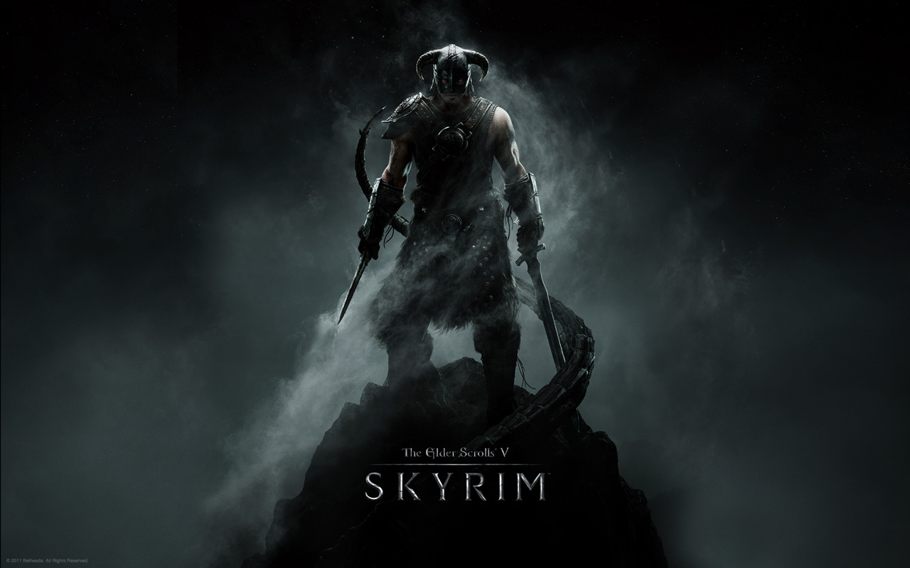

The Elder Scrolls V: Skyrim
Обзор
Великолепная "жвачка" из знаменитой серии снова выстрелила! Причем под словом "жвачка" подразумевается исключительно положительное мнение об играбельности данной игры. Посудите сами — мир игры — ОГРОМЕН, квестов очень много, плюс так называемые "бесконечные" квесты, которые генерируются на основе простых шаблонов "пойди-найди-убей" и подстраиваются под уровень героя и конечно же объемные дополнения, которые добавляют в игру еще больше квестов, врагов и предметов, а также тешат ностальгические чувства фанатов Морровинда, если говорить о последнем дополнении.